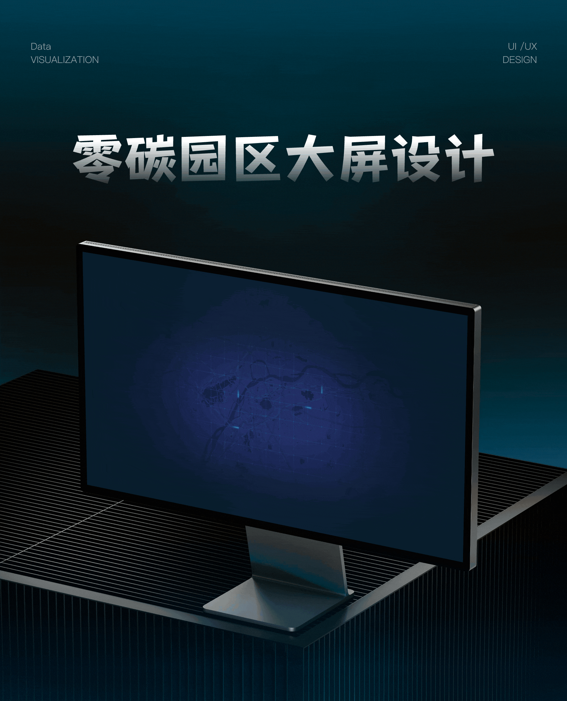
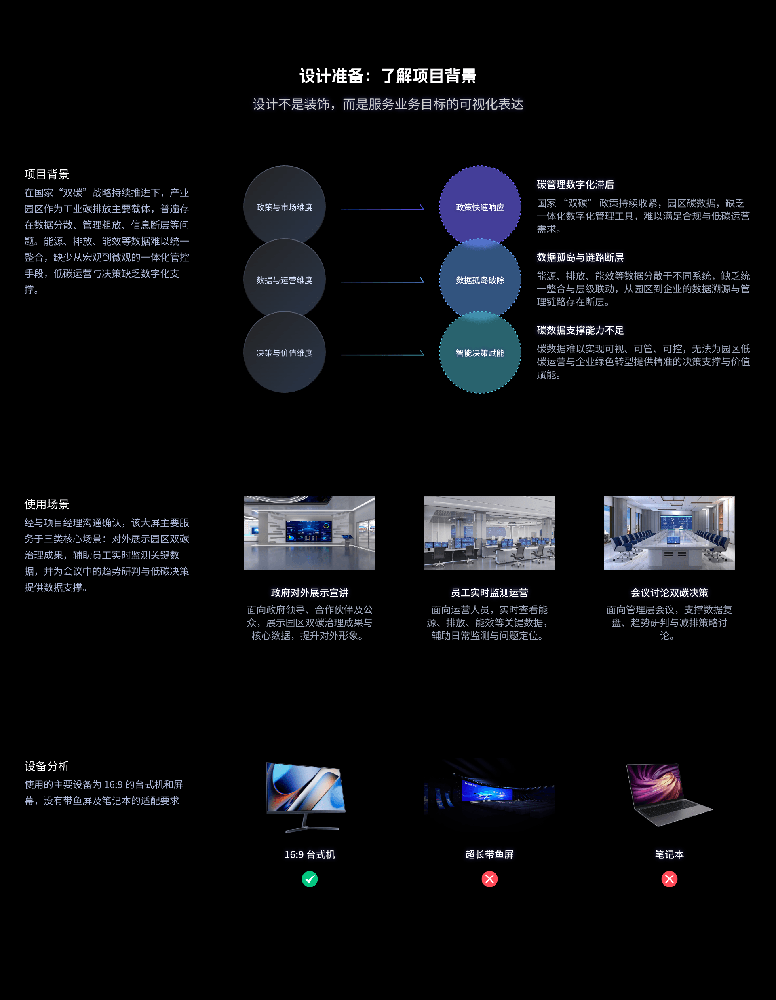

时间：2026年 客户类别：ToG侧
【设计说明】
零碳园区驾驶舱面向园区级碳管理与低碳运营场景，以实现碳数据可视、可管、可控为核心目标，通过全场景三维可视化、多维度指标看板与层级联动交互模块，将分散的能源、排放、能效、企业运营数据整合为统一的决策视图，打通从园区宏观态势感知到企业微观数据溯源的管理路径，构建 "态势总览 - 分区洞察 - 企业穿透" 的一体化碳管理闭环。
【项目复盘】
本次设计聚焦两大核心目标：
·构建从宏观园区态势感知到微观企业碳数据溯源的完整用户体验路径；
·重组多模块间的数据分析流程，消解操作割裂与信息断层，实现园区碳管理的全链路可视化支撑。
【演示说明】
内容包含多层级交互联动演示：从园区全域态势地图，到分区产业集群三维场景，再到单企业能耗排放明细弹窗，支持层层下钻与一键回退；
·数据与业务场景已做脱敏处理，所有指标、企业名称均为模拟数据；
·受静态图片格式限制，部分动态交互细节（如地图缩放、数据联动、弹窗动效）无法完整呈现，如需体验完整交互逻辑，可结合设计原型或动效演示进行查看。

